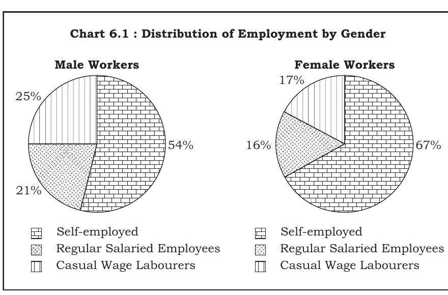
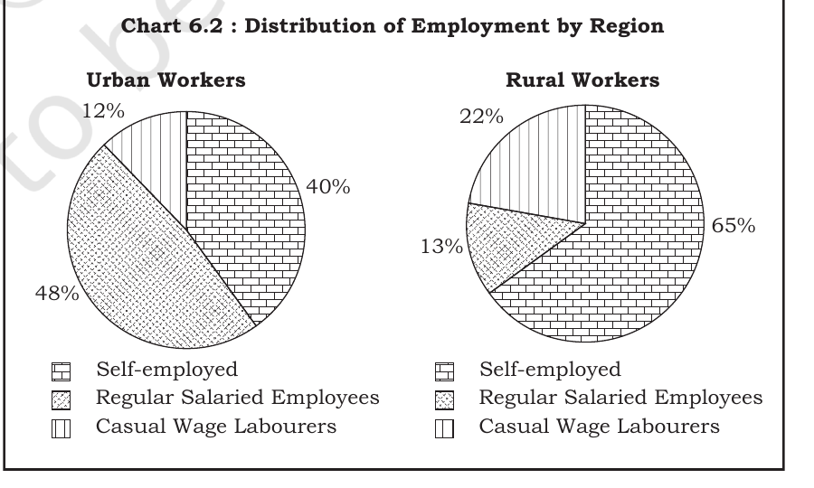
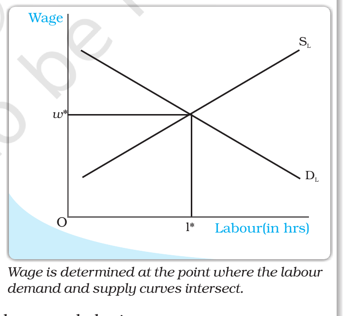
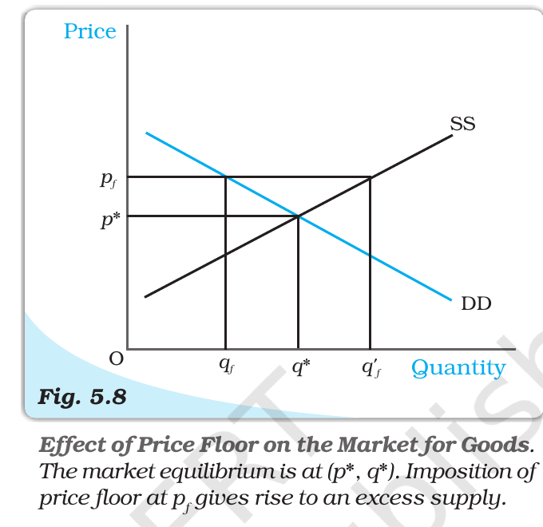
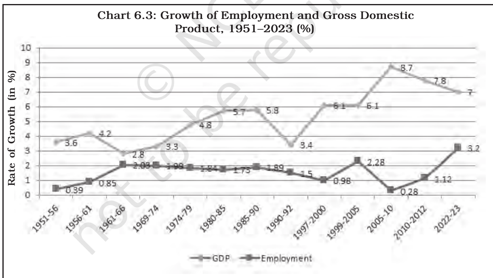

Unemployment: Measures, Types, Causes and Labour Market
Handout only: no class slidesHandout pages 1-3410 Prelims PYQs quotedPYQ sheets: 12 Prelims · 8 Mains · High
Who counts as unemployed, the PLFS and its two approaches (usual status and current weekly status), the types of unemployment, how demand and supply explain wage-rate unemployment, India’s PLFS numbers and what hides behind them, jobless growth, the skill mismatch, labour laws, formal and informal work, the four Labour Codes, fixed-term employment and the schemes.
Handout gives only the answer. Related: Section 6 (employment share of agriculture)
2018
Rise in real GNP does not mean higher development if…
(c) poverty and unemployment increase
Links Chapter 1 and this chapter
2018
PM Kaushal Vikas Yojana: flagship of Ministry of Labour and Employment? soft skills, entrepreneurship, digital literacy? align the unregulated workforce to the NSQF?
(c) 2 and 3 only
Statement 1 is the trap. Related: Section 9 (PMKVY)
2017
National Career Services: initiative of DoPT? launched in mission mode for uneducated youth?
(d) Neither 1 nor 2
Handout gives only the answer. Not in the chapter text
2013
Disguised unemployment generally means…
(c) marginal productivity of labour is zero
Direct hit: Section 4, disguised UE
2013
Economic growth in country X will necessarily occur if…
(c) there is capital formation in X
Handout gives only the answer. Not discussed in the chapter text
2012
How does the National Rural Livelihood Mission seek to improve livelihoods of the rural poor?
(b) 2 only (strengthening SHGs and skill development)
Not in the chapter text. Statement 3 (free inputs) is the trap
2011
Who is eligible for MGNREGA?
(d) Adult members of any household
Section 9 says it guarantees 100 days to rural households that demand unskilled manual work
🧠 Understand it firstPicture the whole population as a crowd. Take out the children and the elderly dependents and you have the working-age crowd. Inside it, only those who are working or hunting for work form the labour force. A grandparent, a student or a homemaker who is not looking is “not working” but is not unemployed either. The unemployed are only those who are able, willing and have actively searched for work.
✏ ExampleThe handout’s own building blocks: UR = UE ÷ LF and LF = Emp + UE, so it is a share of the labour force, not of the population. Which working age? Demography (dependency ratio, demographic dividend) uses 15-64; PLFS measures (LFPR, UR, WPR) use 15 years and above.
📐 Formulas of this section
Dependency ratio
DR = [Pop(0-14) + Pop(65+)] ÷ Pop(15-64) × 100
DR uses 15-64
Labour force
LF = Emp + UE
employed plus unemployed
Unemployment rate
UR = UE ÷ LF = UE ÷ (Emp + UE)
a share of the labour force, not of the population
LFPR
LFPR = labour force of a cohort ÷ total population of the cohort × 100
PLFS reports it for age 15+
WPR
WPR = employed persons ÷ total population
handout: expressed per 1000 persons
The standard definition: unemployment is “a situation where someone who is able as well as willing to work, is unable to find work”. The handout quotes Mankiw, Samuelson-Nordhaus and Blanchard: the unemployed have no job, are available for work and have actively looked for work in the previous four weeks. “Not working” is a large set; “unemployed” is a subset of it, because the grandparent, the young child or the homemaker who is not looking is not unemployed.
The main source for Indian definitions is the Periodic Labour Force Survey (PLFS) of the NSSO. The RBI and the Ministry of Labour generally align with it; the ILO sets the global standard.
The building blocks
Term
Meaning in the handout
Working Age Population (WAP)
People in the age group considered fit for economic activity. In India (NSSO/PLFS) this is typically 15 years and above. The ILO often uses 15-64
Dependents
Those not in the WAP: children (0-14) and, in many contexts, senior citizens (65+). The word is reserved for the non-working-age population
Dependency Ratio (DR)
Dependents ÷ people of working age × 100. DR = [Population (0-14) + Population (65+)] ÷ Population (15-64) × 100
Labour Force (LF)
People who are working or looking for work: both able and willing. Splits into the employed and the unemployed
Not in Labour Force
Unable or unwilling to work: students, rentiers, the disabled, those in domestic duties
Able to work
Physical and mental capacity. Age is only a filter applied later
Willing to work
A genuine effort: the active search criterion (applying for jobs, registering at exchanges) in the reference period
LFPR
Labour force in a cohort ÷ total population of the cohort × 100. Can be crude (whole population), 15+ (the commonly reported one) or for a specific group such as married women aged 21-30
Unemployment rate (UR)
n(UE) ÷ n(LF), and n(LF) = n(Emp) + n(UE). So UR = UE ÷ (Emp + UE). It is a share of the labour force, not of the population
Worker Population Ratio (WPR)
Employed persons ÷ total population. Expressed per 1000 persons
📘 From NCERT · Class XI Indian Economic Development, Ch 6 §6.2-6.3, and Glossary
In plain words: The handout told you who is unemployed. NCERT first tells you who is a worker and gives the first real numbers on how many people work. Read it as the “employed” side of the fraction UR = UE ÷ (Emp + UE).
Link to the handout: Handout section 1: worker population ratio (WPR) and section 2: what counts as employment.
Step 1 · Who is a worker (NCERT’s words)
Activities that contribute to the gross national product are economic activities. All those engaged in economic activities, “in whatever capacity — high or low”, are workers.
People who temporarily stay away from work because of illness, injury or other physical disability, bad weather, festivals, social or religious functions are still workers.
Workers also include all those who help the main workers. Those who are self-employed are workers too: not only people paid by an employer.
Step 2 · Worker-population ratio (WPR)
Why it is useful: it shows what share of the population is actively contributing to the production of goods and services. A higher ratio means greater engagement; a low ratio means a very high proportion of the population is not directly in economic activity.
NCERT’s workforce figure: about 545 million in 2022-23; about 77 per cent of workers are men; rural workers are about two-thirds of the total. Women are about one-fourth of the rural workforce and about one-fifth of the urban workforce.
WPR (NCERT)
WPR = number of workers ÷ population × 100
expressed in percentage; NCERT’s Glossary
Step 3 · NCERT Table 6.1: WPR in India, 2023–24
Reading it: for every 100 urban women only about 21 are in economic activity; for every 100 rural women about 35.
NCERT’s reasons: rural people have limited resources and many leave school early to join the workforce, while urban people can study longer and look for a job to suit their skills. Where men earn high incomes, families discourage women from taking jobs. Many household activities of women are not recognised as productive work, so the number of women workers is under-counted.
Sex
Total
Rural
Urban
Men
56.4
56.3
56.4
Women
30.7
34.8
20.7
Total
43.7
45.6
38.9
NCERT differs: NCERT’s own text says about 41 (41.1) of every 100 persons are workers, urban about 38 and rural about 42, but its Table 6.1 (2023–24) prints 43.7, 38.9 and 45.6. The text is from an older table: use the table. (handout/teacher wins in class)
NCERT differs: NCERT’s WPR is workers ÷ population × 100. The handout’s PLFS figures (WPR 46.8% to 58.2%) use age 15 and above. Do not compare NCERT’s 43.7 with the handout’s 58.2%: the base is different. (handout/teacher wins in class)
📘 From NCERT · Class XII Macroeconomics, Ch 1 §1.1 and Glossary
In plain words: The same fraction UR = UE ÷ LF appears in NCERT’s Class XII book. The wording is slightly different, so know both.
Link to the handout: Handout section 1: UR = n(UE) ÷ n(LF), LF = Emp + UE.
NCERT’s definition of the unemployment rate
NCERT’s example: in the USA, between 1929 and 1933 the unemployment rate rose from 3 per cent to 25 per cent, while aggregate output fell by about 33 per cent (the Great Depression).
Unemployment rate (Ch 1 text)
people not working and looking for jobs ÷ people working or looking for jobs
same as the handout: UE ÷ labour force
NCERT differs: NCERT’s Glossary words the denominator as “total number of people who were looking for jobs”, which is not the labour force. Use the Chapter 1 text and the handout: denominator = employed + unemployed. (handout/teacher wins in class)
🧠 Understand it firstEmployment is anything that adds to national output inside the national-accounts boundary, whether or not a salary arrives. A child helping in a parent’s shop counts; the same child’s mother cooking for her own family does not, because that is not market activity; but a paid cook in someone else’s home does. Pay can come in food, shares, or swapped labour.
✏ ExampleThe handout’s table: running a business for profit Yes; unpaid work in a family shop Yes; farming for own consumption Yes; domestic work for own family No; paid domestic work for others Yes; NGO volunteering No. A 13-year-old at a tea stall is counted as employed in the raw data.
Employment is not just a 9-to-5 job. The NSSO defines it through economic activities, using the System of National Accounts (SNA) boundary (SNA is covered in the National Income Accounting handout). A salary is not mandatory.
Self-employment: own-account workers (a street vendor, a consultant) and employers.
Unpaid family helpers: a child helping in a parent’s kirana store counts as employed even without cash.
Casual labour: daily-wage work in construction or agriculture.
Regular salaried: employees with a contract and monthly pay.
Remuneration can be in kind (food, clothing, a place to stay), in assets (shares or equity), or exchange labour (two farmers working each other’s fields).
Economic or not?
Activity
Employed?
Why
Running a business for profit
Yes
Economic activity for profit
Working in a family shop (unpaid)
Yes
Contributing to a family economic enterprise
Farming for own consumption
Yes
Production of goods for self-consumption (inside the SNA boundary)
Domestic work for own family
No
Non-economic, non-market activity
Paid domestic work for others
Yes
Market activity for remuneration
Volunteer work for an NGO
No
Usually excluded: no remuneration or profit intent
NSSO wording (the handout says understand, do not memorise). Workers: persons engaged in any economic activity, or who despite attachment to it abstained for illness, injury, disability, bad weather, festivals or other contingencies. Unemployed: persons who, owing to lack of work, had not worked but sought work (exchanges, intermediaries, friends or relatives, applications) or expressed willingness or availability for work. “Able to work” is purely physical and mental capacity: the NSSO has a code (Code 95) for those not able to work owing to disability and does not use age. A 13-year-old working at a tea stall is counted as employed in the raw data.
📘 From NCERT · Class XI Indian Economic Development, Ch 6 §6.4 and Glossary
In plain words: The handout lists self-employed, casual, regular salaried and unpaid helpers. NCERT gives each its plain definition, a worked example and the data: who is where, and how the mix has changed.
Link to the handout: Handout section 2 bullet list: self-employment, unpaid family helpers, casual labour, regular salaried.
Step 1 · The three statuses (NCERT’s own example: three workers in the construction industry)
Two Glossary terms: employers = self-employed workers who run their enterprises by hiring labourers; family worker = a member who works without receiving wages in cash or kind in a family farm, industry, business or trade (the handout’s “unpaid family helper”).
NCERT says the status shows one dimension of the quality of employment: the attachment a worker has to the job and the authority over the enterprise and co-workers. Casual wage labourers are the most vulnerable.
Status
NCERT’s definition
NCERT’s example
Share of workforce (NCERT)
Self-employed
Workers who own and operate an enterprise to earn their livelihood
Cement shop owner
about 58 per cent
Casual wage labourer
Casually engaged in others’ farms or non-farm enterprises; paid wages by the terms of a daily or periodic work contract
Construction worker
about 20 per cent
Regular salaried employee
Engaged by someone or an enterprise and paid wages on a regular basis
Civil engineer in a construction company
about 22 per cent
Step 2 · Who is where (NCERT Charts 6.1 and 6.2)
Self-employment is the major source of livelihood for both men and women (more than 50 per cent). Casual work is the second major source for women. In regular salaried jobs men are 21 per cent and women 16 per cent.
Self-employed are more in rural areas (most farmers own their plots). In urban areas regular salaried jobs are greater because enterprises there need workers on a regular basis.

NCERT Chart 6.1, original: distribution of employment by gender (self-employed, regular salaried, casual wage labourers). How to read: in each pie, self-employment is the biggest slice; women have the larger self-employed share and men the larger casual share.

NCERT Chart 6.2, original: distribution of employment by region. How to read: rural workers are mostly self-employed; the biggest urban slice is regular salaried.
Step 3 · NCERT Table 6.3 (status-wise), % of workforce
NCERT’s name for moving from self-employment and regular jobs to casual wage work is casualisation; it makes workers highly vulnerable. NCERT also notes a moderate rise in the share of regular salaried employees in 2017-24.
Status
1972-73
1993-94
2011-2012
2017-2018
2023–24
Self-employed
61.4
54.6
52.0
55.6
58.4
Regular salaried employees
15.4
13.6
18.0
21.1
21.7
Casual wage labourers
23.2
31.8
30.0
23.3
19.9
NCERT differs: NCERT’s text says that over 1972-2024 people moved from self-employment and regular jobs to casual wage work, but its own Table 6.3 shows the casual share rising to 31.8 in 1993-94 and then falling to 19.9 in 2023–24, below its 1972-73 level of 23.2. The claim fits the period to 1993-94 only. (handout/teacher wins in class)
NCERT differs: NCERT leaves open whether women’s unpaid household work should count (“what do you think?”). The handout’s rule is clear: domestic work for the own family is not employment. A housewife who also works in her husband’s shop (NCERT Q9) counts for the shop work, as an unpaid family helper. (handout/teacher wins in class)
⭐ RememberEmployed = inside the SNA boundary. A salary is not mandatory.
🧠 Understand it firstThere are two ways to ask the same person what they were doing. Usual Status looks back a whole year and asks what you did most of the time. Current Weekly Status looks only at last week and gives priority to working over seeking over staying out. A year smooths the seasons; a week catches shocks, so the weekly rate usually reads higher. In Usual Status the first test is the labour-force test: 183 days or more working or seeking. Then Principal Status asks if you worked the majority of those days, and Subsidiary Status rescues anyone with at least 30 days of work. Merge both and you get UPSS.
✏ ExampleThe handout’s population-1000 example: Not in LF = 200; LF = 800. Principal status: employed 600, unemployed 200. Of those 200, subsidiary status: employed 150, unemployed 50. UR (PS) = 200 ÷ 800 = 25% and UR (PS+SS) = 50 ÷ 800 = 6.25%, the headline rate. Also the four-person table (persons A to D).
📐 Formulas of this section
Labour-force test (US)
in LF if working or seeking for ≥ 183 days
Principal Status
Principal status
employed if work found for the majority of the LF days
LF 200 days, work 120 days → employed
Subsidiary status
employed if work for ≥ 30 days in the year
not even 30 days → unemployed on SS
CWS rule
working if worked ≥ 1 hour on any 1 day in the 7 days
priority: Working beats Unemployed beats Not in LF
UR (PS)
200 ÷ 800 = 25%
handout, population-1000 example
UR (PS+SS)
50 ÷ 800 = 6.25%
the headline rate
The NSSO measures unemployment through the PLFS. Earlier it used the EUS (Employment-Unemployment Survey), carried out about once in 5 years. The PLFS has a larger sample, higher frequency and better technology: an annual survey where sampled households are visited once every month. Field investigators ask how household members spent their time over set reference periods, and each person is classified into one of three statuses: Working, Seeking/Available for work, Not in labour force.
How the PLFS arrives at the unemployment rate (same logic as poverty: standard, sample, information, application)
1 · Lay down two standards
One to decide whether a person is in the LF; one to decide, if in LF, whether working
2 · Take a representative sample
Collect data relevant to the standards
3 · Apply the standards
Status A: neither working nor looking (not in LF). Status B: working (employed). Status C: not working (unemployed)
An “approach” is simply a standard. As with poverty, a person can be “working” on one approach and not even in the LF on the other. The PLFS uses two.
Usual Status (US) versus Current Weekly Status (CWS)
Point
Usual Status (US)
Current Weekly Status (CWS)
Reference period
One year (365 days)
The 7 days before the survey
Criterion
Majority time: what was the person doing for most of the period
Priority: Working beats Unemployed beats Not in LF
In LF if
Working or seeking work for the majority of the year (≥ 183 days) = Principal Status (PS)
Worked or was available for work at any point in the 7 days
Working if
PS: worked the majority of the days in the LF. SS: worked at least 30 days in the year
Worked for at least 1 hour on any 1 day in the week
Unemployed if
In LF but did not work for the majority of LF days (PS); and on SS, did not work even 30 days
Did not work even an hour but was seeking or available for work for at least 1 hour on any day
What it captures
Chronic or long-term (structural) picture; smooths seasonal bumps
Short-term fluctuations and underemployment; closer to ILO standards; reacts quickly to shocks
Which UR is higher?
Generally lower
Generally higher. Short recall makes answers accurate and captures seasonality
Principal and Subsidiary status in detail
PS (Principal Status): in the LF if working or seeking for ≥ 183 days. Then “employed” if work was found for the majority of the days in the LF. Example: LF for 200 days and work for 120 days gives employed.
SS (Subsidiary Status): a person who is principally unemployed but found work for at least 30 days is employed on SS. Anyone with work for at least 30 days in the year is employed on SS basis. Unemployed on both PS and SS means not even 30 days of work.
UPSS (Usual Principal and Subsidiary Status) merges both: a person is employed if a worker in either capacity. This deliberately captures invisible labour, for example millions of women whose principal status is domestic duties but who spend about 40 harvest days in farm labour.
The handout’s four-person example
Person
Days working
Days looking
Total LF days
In LF (≥ 183)
PS employed
SS employed
A
150
0
150
No (not in LF)
-
Yes (≥ 30 days)
B
110
90
200
Yes
Yes (110 ≥ 100)
Yes
C
140
160
300
Yes
No (140 < 150)
Yes
D
25
275
300
Yes
No
No (25 < 30)
Usual status: the order of tests
📘 From NCERT · Class XI Indian Economic Development, Ch 6 §6.8 and Glossary
In plain words: NCERT gives the same NSO wording of “unemployed” that the handout says to understand, plus the sources of unemployment data and how people actually search for work.
Link to the handout: Handout section 3: PLFS, and the “NSSO wording” note under section 2.
Step 1 · The definition (NCERT’s words, short)
Unemployment: all those who, owing to lack of work, are not working but either seek work through employment exchanges, intermediaries, friends or relatives or by making applications to prospective employers, or express their willingness or availability for work under the prevailing condition of work and remunerations.
Economists define an unemployed person as one who is not able to get employment of even one hour in half a day.
Step 2 · Where the data come from (NCERT’s list)
They give different estimates of unemployment, but they show the attributes of the unemployed and the variety of unemployment in the country.
How people look for work, in NCERT’s picture: newspapers, friends and relatives, standing in select areas for a day’s work, handing over a bio-data at factories and offices, registering at employment exchanges. Many rural people do not go out to ask for work but stay at home when there is none.
#
Source of data on unemployment
1
Reports of the Census of India
2
National Statistical Office’s Reports of Employment and Unemployment Situation
3
Annual Reports of the Periodic Labour Force Survey (PLFS)
4
Directorate General of Employment and Training data on registration with Employment Exchanges
NCERT differs: NCERT says there are “three sources” but lists four. Learn the four. (handout/teacher wins in class)
NCERT differs: NCERT’s “even one hour in half a day” is the economists’ test. For PLFS questions use the handout’s rules: US with 183 days and 30 days; CWS with at least 1 hour on any 1 day in the 7 days. (handout/teacher wins in class)
NCERT differs: NCERT calls the body the National Statistical Office (previously the National Sample Survey Organisation). The handout writes NSSO/PLFS. (handout/teacher wins in class)
⭐ RememberTest order: LF (≥ 183 days) → PS → SS. UPSS = PS + SS = the headline UR.
🧠 Understand it firstEach type is a different reason a person is without work or under-used. Structural: the skills do not fit the new jobs. Seasonal: the work itself comes and goes with the calendar. Frictional: the short search time between jobs. Voluntary: the job is on offer but the person says no. Wage-rate: the wage is stuck too high, so more people want work than firms want to hire. Cyclical: the economy is in a slowdown. Underemployment and disguised unemployment are different again: those people are counted as employed, but their work is not fully used or adds nothing.
✏ ExampleThe handout’s farm picture: a 2-acre family farm needs 2 people but has 5 brothers; output stays 100 quintals, so the 3rd, 4th and 5th brothers have MPL zero. 3 hours of work in an 8-hour day is underemployment (the old CDS test). PhD holders applying for peon posts are invisible underemployment.
📐 Formulas of this section
Marginal product
MPL of the (n+1)th worker = output(n+1) − output(n)
n workers make x, n+1 make x + y → marginal output y; disguised UE: y = 0
The types at a glance
Type
What it is
Handout’s example or cause
Structural
Joblessness from a fundamental mismatch between skills workers have and skills employers demand, or between worker and job location. Long-term and dangerous: workers are “immobile” from the old structure to the new
Agriculture to industry; new technology; automation displaces low-skilled factory labour while AI developers are scarce
Seasonal
Predictable drops in labour demand at specific times of year
Agriculture outside harvest; tourism off-season; construction in the rains
Frictional
The “search time” to match worker and job under imperfect information. A certain level is healthy. Job portals have reduced it
Quitting one job and not yet finding another; fresh graduates entering the workforce
Voluntary
In the LF, offered a job, but chooses not to accept it, and so counted as unemployed
Officially employed but the job does not use skills, education or hours on offer. Invisible: over-qualified, over-skilled. Visible: wants longer hours
PhD holders applying for peon or sweeper posts; 3 hours of work in an 8-hour day (the old CDS test)
Disguised
More workers than needed; the extra workers add no output. Their marginal product of labour (MPL) is zero (or negative). Recorded as employed, so the reality is hidden
A 2-acre family farm that needs 2 people but has 5 brothers: output stays 100 quintals, so the 3rd, 4th and 5th brother have MPL zero. A hallmark of Indian agriculture
Wage-rate (classical)
Wages stay above equilibrium and cannot fall, so labour supply exceeds demand permanently
Minimum wages fixed above equilibrium by law; strong unions bargaining wages up
Cyclical (Keynesian)
Extra unemployment above the natural rate because growth is slower than expected (a downturn in the business cycle)
Falls when aggregate demand grows fast; rises when it slows
📘 From NCERT · Class XI Indian Economic Development, Ch 6 §6.8
In plain words: NCERT names only three kinds of unemployment, each with a village picture. They are the easiest way to remember disguised and seasonal unemployment.
Link to the handout: Handout section 4: disguised, seasonal; “open” is what the handout simply calls unemployed in the labour force.
NCERT’s three kinds
NCERT’s observation: in India people cannot remain completely unemployed for long because their desperate economic condition would not allow it. They take jobs nobody else would do, even unpleasant or dangerous ones.
Kind
NCERT’s meaning
NCERT’s picture
Open unemployment
People without work who look for it
Reading job ads, asking friends and relatives, standing at a labour spot, leaving a bio-data at a factory
Disguised unemployment
More workers on the job than it needs; “common in Indian farms”
A farmer has four acres and needs only two workers and himself, but employs five workers and family members. A study in the late 1950s found about one-third of agricultural workers disguisedly unemployed
Seasonal unemployment
Work only in some months of the year; “also a common form”
People migrate to a city, take a job, and return home as the rainy season begins, because there is no village work in all months
Why farms are crowded, and where the extra hands can go (Class XI Ch 5 §5.5)
“As agriculture is already overcrowded”, a major part of the increasing labour force must find alternate employment in non-farm sectors.
Much farm employment is concentrated in the Kharif season; in the Rabi season, where irrigation is inadequate, it is hard to find gainful employment. So allied activities and non-farm work are needed as supplementary employment.
NCERT’s dynamic non-farm sub-sectors: agro-processing, food processing, leather, tourism. Traditional home-based industries (pottery, crafts, handlooms) have potential but lack infrastructure. The livestock sector alone gives alternate livelihood to over 70 million small and marginal farmers, including landless labourers. Most rural women find work in agriculture while men generally look for non-farm work.
NCERT differs: Handout example: a 2-acre farm, 2 people needed, 5 brothers. NCERT example: 4 acres, 2 workers and the farmer needed, 5 workers plus family. Different numbers, same idea; use the handout’s in answers. NCERT’s one-third figure is from a late-1950s study. (handout/teacher wins in class)
📘 From NCERT · Class XII Microeconomics, Ch 3 §3.3-3.4 (marginal product)
In plain words: The handout says disguised unemployment is where the marginal product of labour is zero. NCERT’s farm table shows how marginal product behaves as you keep adding workers to the same land. Read the table row by row.
Link to the handout: Handout section 4: marginal product of the (n+1)th worker = output with n+1 minus output with n; disguised UE is y = 0.
Step 1 · The formula
NCERT’s example: when L goes from 1 to 2, TP goes from 10 to 24, so MP of the 2nd worker = 14 ÷ 1 = 14.
Marginal product of labour (NCERT)
MPL = TP(L units) − TP(L − 1 units)
TP = total product; the sum of the marginal products gives the total product
Step 2 · NCERT Table 3.2: a farmer with 4 hectares who chooses how much labour to use
NCERT’s law of variable proportions: marginal product first rises, then, after a certain level of employment, falls. When the fourth worker is hired the land begins to get crowded: each worker has insufficient land to work efficiently.
Link to the handout (worked out here): in NCERT’s table the 6th worker still adds 1 unit. Disguised unemployment is the further stage where the extra worker adds 0, so output stays at 57 and that worker is “employed” on paper only.
Labour (L)
Total product (TP)
Marginal product (MPL)
What is happening
1
10
10
too much land for one worker
2
24
14
each worker adds more
3
40
16
the best point
4
50
10
land begins to get “crowded”
5
56
6
crowded
6
57
1
almost nothing added
⭐ RememberDisguised: MPL = 0 and counted employed. Underemployment is employment, not unemployment.
5 · Demand, supply and the market (needed for wage-rate unemployment)#
🧠 Understand it firstWage-rate unemployment needs one idea: a wage is a price. Demand slopes down (dearer, fewer wanted); supply slopes up (dearer, more offered). The price settles where the two meet. For labour, firms demand it and workers supply it. If the wage sits above the meeting point and cannot fall, a permanent crowd of workers has no job.
✏ ExampleThe handout: DL ∝ 1 ÷ wages and SL ∝ wages. If wages above equilibrium cannot adjust downwards, there is a permanent excess supply of labour: wage-rate unemployment. Examples: minimum wages fixed above equilibrium by law; strong unions bargaining wages up.
📐 Formulas of this section
Demand for labour
DL ∝ 1 ÷ wages
high wages, fewer workers wanted
Supply of labour
SL ∝ wages
high wages, more people willing to work
Law of demand
QD varies inversely with price
ceteris paribus
Law of supply
QS varies directly with price
ceteris paribus
The handout inserts the basics of markets here so that wage-rate unemployment can be understood.
Demand exists only when there is both ability and willingness. Quantity demanded (QD) is what is actually asked for. Factors: price, income, taste, culture, geography (season), population size, substitutes.
Law of demand (ceteris paribus): QD varies inversely with price. If another factor changes, the curve shifts.
Supply needs both ability and willingness. Quantity supplied is what is being produced. Factors: price, profitability, raw materials, labour, capital, ease of doing business and policy, investment (especially R&D), infrastructure.
Law of supply (ceteris paribus): quantity supplied varies directly with price.
Price takers. Producers and consumers take the price the market offers. Under perfect competition (identical goods, no entry or exit barriers) no one can set a price. In real markets competition is imperfect and producers have limited pricing power. Only in a monopoly are producers price setters.
A market is a place of exchange of information and so of rationalising expectations, not merely a place.
How a market reaches equilibrium (as the handout explains it)
Start: some random price P1
At P1, quantity supplied is greater than quantity demanded: excess supply
Sellers fear unsold stock
They cut prices: downward pressure. New buyers enter (QD rises), some sellers exit (QS falls)
Price adjusts to P0
QS = QD. No excess supply, no downward pressure
If the start price was P2 (below P0)
QD > QS: excess demand. Buyers bid prices up until QS = QD at P0
Equilibrium price and market clearance
At P0 everyone who came to sell has sold and everyone who came to buy has bought. Equilibrium is rarely seen because factors keep changing; the price is always adjusting towards it
The labour market works the same way. Firms demand labour; the labour force supplies it. Demand for labour (DL) ∝ 1 ÷ wages (high wages, fewer workers wanted); supply of labour (SL) ∝ wages (high wages, more people willing to work). Factors for DL: wages, price of substitutes such as machines, skill, number of firms, willingness to hire given complex laws. Factors for SL: wages, terms and conditions, education and skill level of the population. If wages above equilibrium cannot adjust downwards, there is permanent excess supply: wage-rate unemployment.
📘 From NCERT · Class XII Microeconomics, Ch 5 §5.1 and Wage Determination in Labour Market
In plain words: The handout inserted market basics so that wage-rate unemployment can be understood. NCERT gives a worked numerical example of equilibrium and then applies the same idea to wages, with the firm’s rule for hiring.
Link to the handout: Handout section 5: DL ∝ 1 ÷ wages and SL ∝ wages; equilibrium; excess supply.
Step 1 · Equilibrium with numbers (NCERT Example 5.1: wheat)
In a market, some buyers or sellers always have an incentive to change the price until the two sides match. That is why the price moves back to p*.
Demand
qD = 200 − p
kg of wheat; p in rupees per kg
Supply
qS = 120 + p
Equilibrium
200 − p* = 120 + p* → p* = 40, q* = 160
market clears: demand = supply
Excess demand
ED(p) = qD − qS = 80 − 2p
positive for any price below 40
Excess supply
ES(p) = qS − qD = 2p − 80
positive for any price above 40
Price p (₹/kg)
Quantity demanded
Quantity supplied
Result
25
175
145
excess demand: price tends to rise
40
160
160
equilibrium
45
155
165
excess supply: price tends to fall
Step 2 · The labour market (NCERT’s wage determination)
The roles are reversed: households supply labour and firms demand it. By “labour” NCERT means the hours of work, not the number of labourers.
The wage is fixed where the demand and supply curves of labour cross: where the labour the households wish to supply equals the labour the firms wish to hire.

NCERT, original: wage determination in the labour market. Wage on the vertical axis, labour in hours on the horizontal axis. D<sub>L</sub> falls, S<sub>L</sub> rises, and they cross at the wage w* and labour l*.
Step 3 · Why firms demand less labour at a higher wage
A profit-maximising firm hires labour up to the point where the extra cost of the last unit (the wage) equals its extra earning (MRPL). If VMPL is above the wage, hiring one more unit raises profit; if below, cutting one unit raises profit.
Because marginal product falls as more labour is hired, a higher wage can be matched only by hiring less labour. So the demand curve for labour slopes downward.
Hiring rule
w = MRPL
wage = marginal revenue product of labour
MRPL
MRPL = MR × MPL
for a perfectly competitive firm MR = price, so MRPL = VMPL (value of marginal product)
Step 4 · Why labour supply rises with the wage
A household chooses between income and leisure. A higher wage makes leisure costlier (work longer) but also raises purchasing power (more leisure). At low wages the first effect dominates; at high wages the second can dominate.
So one person’s supply curve can bend backwards, but the market supply curve of labour slopes upward, because many more people are attracted to supply labour at a higher wage.
NCERT differs: NCERT stresses that an individual’s supply may bend backwards; the handout says only SL ∝ wages. For the market, the two agree. (handout/teacher wins in class)
📘 From NCERT · Class XII Microeconomics, Ch 5 §5.2.2 Price floor
In plain words: This is the exact mechanism behind the handout’s wage-rate unemployment: a minimum wage fixed above the equilibrium wage.
Link to the handout: Handout section 5 and section 6: “minimum wages fixed above equilibrium by law” as the example of wage-rate unemployment.
Step 1 · The rule
A price floor is a government-imposed lower limit on the price that may be charged. Well-known examples: agricultural price support and minimum wage legislation.
Through the minimum wage the government ensures the wage rate does not fall below a particular level, and the minimum wage is set above the equilibrium wage rate.
Step 2 · What happens at the floor
At the floor pf above the equilibrium p*, the quantity demanded is qf but the quantity firms want to supply is qf′: an excess supply in the market.
Read it for wages: more labour is offered than is demanded at the floor wage. For farm produce the government must buy the surplus; for labour the excess supply is the unemployed.

NCERT Fig. 5.8, original: effect of a price floor. The floor p<sub>f</sub> lies above the equilibrium p*; demand is q<sub>f</sub>, supply is q<sub>f</sub>′, and the gap between them is the excess supply.
NCERT differs: NCERT itself does not use the words “wage-rate unemployment” and speaks only of excess supply at a floor. The handout’s name for the labour case is wage-rate (classical) unemployment. (handout/teacher wins in class)
6 · Four kinds of wage, and cyclical unemployment#
🧠 Understand it firstFour wage yardsticks climb like steps: the floor wage (the nationwide bottom), the minimum wage (survival, set mostly by States), the fair wage (what the industry can afford) and the living wage (what a family needs for dignity, whatever the employer can pay). The second half is about growth. Firms hire when they expect demand, so unemployment rises in a slowdown. Even in good times some unemployment stays: that is the natural rate, the rate at full employment (which is not zero). NAIRU is the line below which pushing unemployment makes inflation speed up.
✏ ExampleThe handout’s sum: LF 100 (80 employed, 20 unemployed, UR 20%). LF rises 10% to 110 and employment rises 5% to 84. Unemployed = 26 and UR = 26 ÷ 110 = 23.6%, higher than 20%, even though jobs rose. Economist A says NRU is 5% so cyclical UE is 3%; Economist B says 7% so 1% (UR is 8%).
wage-rate and cyclical UE are both zero at NRU; full employment is not zero unemployment
Cyclical UE
cyclical UE = actual UR − NRU
UR 8%: NRU 5% → 3%; NRU 7% → 1% (handout)
UR falls only if
employment growth > labour-force growth
LF +10%, jobs +5%: UR 20% → 23.6%
Types of wages
Wage
What it is
Focus
Floor wage
A central baseline set by the Union Government (Code on Wages, 2019). States cannot set minimum wages lower than it, which prevents a race to the bottom
Absolute national bottom
Minimum wage
The lowest legal pay for a category of work. State governments primarily set it, so a factory worker in Haryana may have a different one from Bihar. Designed to prevent extreme exploitation
Survival
Fair wage
Between the minimum and the living wage; capped by what the industry can afford. Formalised by the Committee on Fair Wages (1948). Depends on prevailing area rates, productivity and profitability
Industry capacity to pay and worker’s willingness
Living wage
A normative wage for a decent standard of living: nutrition, housing, healthcare, children’s education, transport, savings. Ignores whether the employer can afford it. Almost always above the statutory minimum
Decent life and dignity
The wage ladder
Cyclical (Keynesian) unemployment
A firm hires because it needs workers, and that depends on the demand for the goods it expects to sell. At the economy level, demand for workers is derived from aggregate demand (AD).
UR falls only when employment growth is faster than labour-force growth. Example: LF 100 (80 employed, 20 unemployed, UR 20%). LF rises 10% to 110 and employment rises 5% to 84. Unemployed = 26 and UR = 26 ÷ 110 = 23.6%, higher than 20%, even though jobs rose.
Growth is cyclical (booms and recessions) and unemployment moves inversely. If growth is slower than an economist expected, the extra UR is cyclical.
Natural rate of unemployment (NRU) and NAIRU
NRU: the UR when wages are at equilibrium (zero wage-rate UE) and the cycle is neutral (zero cyclical UE). NRU = frictional + structural + seasonal + voluntary UE. At the NRU the economy is at full employment (which is not zero unemployment) and producing at potential GDP.
NAIRU (Non-Accelerating Inflation Rate of Unemployment): comes from the Phillips Curve (covered in the Inflation chapter). If UR is pushed below it by printing money or heavy deficit spending, the labour market tightens, wages are bid up, a wage-price spiral starts and inflation accelerates.
The actual UR can be counted. NRU and potential GDP cannot be measured; they are estimated and depend on the model. Example: UR is 8%. Economist A says NRU is 5% so cyclical UE is 3%; Economist B says NRU is 7% so cyclical UE is 1%.
📘 From NCERT · Class XII Macroeconomics, Ch 1 §1.1, Ch 4 §4.4, Ch 5 §5.1.1 and Box 5.1
In plain words: The handout calls cyclical unemployment “Keynesian”. NCERT tells the story behind the label: why Keynes arrived, what “full employment” means, and why government steps in.
Link to the handout: Handout section 6: cyclical (Keynesian) unemployment; natural rate and full employment; demand for workers is derived from aggregate demand.
Step 1 · Before and after Keynes
The dominant thinking before Keynes (the classical tradition): all labourers who are ready to work will find employment and all factories will work at full capacity.
The Great Depression of 1929 and after: output and employment fell by huge amounts, factories lay idle, workers lost jobs. The fact that the economy may have long lasting unemployment had to be explained. Keynes’ book The General Theory of Employment, Interest and Money (1936) was the attempt, and macroeconomics was born.
Step 2 · Equilibrium is not full employment (Ch 4 §4.4)
Full employment level of income (NCERT): the level where all the factors of production are fully employed. Equilibrium (Y = AD) only means income will not change by itself, even if there is unemployment.
Where equilibrium output stands
Situation (NCERT’s name)
Cause
Effect in the long run (NCERT)
Below the full employment level
Deficient demand
Demand is not enough to employ all factors of production
Decline in prices
Above the full employment level
Excess demand
Demand is more than the output produced at full employment
Rise in prices
Step 3 · Why government steps in (stabilisation function, Ch 5)
The level of employment and prices depends on aggregate demand, which depends on the decisions of millions of private agents. In any period demand may not be enough to use labour fully.
Since wages and prices do not fall below a level, employment cannot be brought back automatically. The government needs to intervene to raise aggregate demand. If demand exceeds output under high employment, restrictive conditions may be needed to cut demand.
Keynes’ main idea (Box 5.1): fiscal policy should be used to stabilise output and employment, through changes in expenditure and taxes.
NCERT differs: NCERT’s “full employment: all the factors are fully employed” sounds like zero unemployment. The handout says full employment is not zero unemployment: it is the natural rate, at potential GDP. Handout wins. (handout/teacher wins in class)
NCERT differs: Inside NCERT: Ch 4 says deficient demand leads to falling prices in the long run, while Ch 5 says wages and prices do not fall below a level. Take the Ch 5 point for jobs: sticky wages are why unemployment does not cure itself. (handout/teacher wins in class)
🧠 Understand it firstThe headline looks great: unemployment falls from 6.0% to 3.2% while more people join the labour force and more people work. But a low UR is only good if the jobs behind it are good. Almost the whole fall came from more agricultural jobs and more self-employment, where productivity is low or workers are vulnerable. Education shows the odd pattern: the more educated, the higher the unemployment.
✏ ExampleThe handout’s productivity table: agriculture 18 (share of GDP) against 46 (share of workers), ₹0.39 per worker; industry 28 and 25, ₹1.12; services 54 and 29, ₹1.86. Graduates: UR 12.9% (2024); at age 20-24 it is 37%.
📐 Formulas of this section
Relative productivity
GDP share ÷ employment share
agriculture 18 ÷ 46 → ₹0.39 per worker (handout)
India’s UR is measured by the PLFS, carried out every year since 2017. It gives both US (PS+SS) and CWS rates; the CWS numbers are now released monthly for rural and urban areas. The survey period was July-June and has now changed to the calendar year (Jan-Dec).
PLFS (usual status, age 15+)
Survey (July-June)
UR
LFPR (overall)
Female LFPR
2017-18
6.0%
49.8%
23.3%
2018-19
5.8%
50.2%
24.5%
2019-20
4.8%
53.5%
30.0%
2020-21
4.2%
54.9%
32.5%
2021-22
4.1%
55.2%
32.8%
2022-23
3.2%
57.9%
37.0%
2023-24
3.2%
60.1%
41.7%
Then and now
Indicator
2017-18
2023-24
Trend
LFPR
49.8%
60.1%
Rising
WPR
46.8%
58.2%
Rising
UR
6.0%
3.2%
Falling
The handout calls this “outstanding”: a falling UR with a rising LFPR. Then it asks what is behind the numbers.
India's falling UR: read both sides
Critical analysis of the trends
LFPR is still low. Handout comparators: Vietnam ~68.5%, China ~66.5%, South Korea ~63.5%, Japan ~63.2%, United States ~62.5%, Bangladesh ~61.9%. India crossed 60% for the first time in 2023-24.
The UR decline is not entirely desirable. Between PLFS rounds 2 to 3 and 3 to 4 almost the whole fall came from (a) more agricultural jobs and (b) more self-employment.
Agriculture already has disguised UE and underemployment and the lowest productivity, so a net rise in agricultural jobs is undesirable for a country wanting the demographic dividend.
Self-employment is generally more productive and remunerative, but leaves workers vulnerable to shocks without safety nets, and much of it is distress employment.
Sector productivity (the handout’s table)
Sector
Share in GDP (₹)
Share in employment (workers)
Relative productivity (GDP ÷ employment)
Agriculture
18
46
₹0.39 per worker
Industry
28
25
₹1.12 per worker
Services
54
29
₹1.86 per worker
Context. Agriculture’s employment share was about 75% at independence, fell below 50% around 2012, reached about 44% before Covid, and rose to about 46% by PLFS round 5 because only agriculture could absorb the laid-off. The last two surveys show it declining again. Self-employment has risen continuously and Covid only accelerated it. Firms prefer contractual workers (no compliance burden, flexible size), and a growing proportion of workers prefer self-employment for quicker earnings. The handout calls it “a low-income country with first world problems” and says the focus should be on reducing vulnerability and building skills.
Handout figure Unemployment rate by education level (2024): illiterate close to nil, primary 1.1%, secondary 3.5%, higher education 12.9%. Among graduates in the labour force one in eight is unemployed. Source printed: PLFS 2023-24.
Handout figure Unemployment rate among graduates by age group (2024): 20-24 years 37%, 25-29 years 19%, 30-34 years 8%, 35-39 years 2%, 40-44 years under 1%. Highest among recent graduates.
Handout figure Graduates outside the labour force, by reason, gender and age (2024). Women: care and home commitments dominate (about 58% in the twenties, 91% in the thirties, 88% in the forties). Men in their twenties: education (96%).
Handout figure India’s unemployment situation (all-India, age 15+ and youth 15-29), Apr-Jun and Jul-Sep: all-India 5.4% and 5.2%; rural 4.8% and 4.4%; urban 6.8% and 6.9%; youth 14.6% and 14.8%; rural youth 13.1% and 13.1%; urban youth 17.9% and 18.4%. Source printed: MoSPI.
📘 From NCERT · Class XI Indian Economic Development, Ch 6 §6.5-6.6, and Ch 8 Table 8.3
In plain words: The handout shows how India’s employment is split between agriculture, industry and services. NCERT gives the full table by place and sex, the long trend since 1972-73, and a comparison with China and Pakistan.
Link to the handout: Handout section 7: sector productivity table; agriculture’s share of employment; context paragraph.
Step 1 · The three sectors (NCERT groups eight industrial divisions)
NCERT adds that the secondary and tertiary sectors can also be called the non-farm sectors. In the course of development, labour flows from agriculture to industry and services; much later the industrial sector begins to lose its share as services expand rapidly.
Sector
Industrial divisions inside it
Primary
Agriculture; mining and quarrying
Secondary
Manufacturing; electricity, gas and water supply; construction
Reading it: about 60 per cent of rural workers depend on agriculture, forestry and fishing; about 61 per cent of urban workers are in services. Women are far more concentrated in the primary sector than men.
Sector
Rural
Urban
Male
Female
Total
Primary
59.8
6.7
36.3
64.4
46.1
Secondary
21.4
32.4
28.8
15.6
24.1
Tertiary / service
18.8
60.9
34.9
20.0
29.8
Step 3 · NCERT Table 6.3: the long trend (sector-wise, %)
NCERT asks you to think about the stagnation of the secondary sector and the moderate rise in self-employment during 2011-24.
Sector
1972-73
1983
1993-94
2011-2012
2017-2018
2023–24
Primary
74.3
68.6
64
48.9
46.1
46.1
Secondary
10.9
11.5
16
24.3
24.9
24.1
Services
14.8
16.9
20
26.8
29.0
29.8
Step 4 · India, China and Pakistan in 2022 (Class XI Ch 8, Table 8.3, %)
NCERT’s reading: in the normal course of development a country first shifts employment and output from agriculture to industry and then to services. China shows this; in India and Pakistan the shift is taking place directly to the service sector.
Sector
GVA share: India
China
Pakistan
Workforce share: India
China
Pakistan
Agriculture
18
8
24
43
23
36
Industry
28
38
21
26
32
26
Services
54
54
55
31
45
38
NCERT differs: Agriculture’s workforce share: NCERT Table 8.3 (2022, World Development Indicators) says 43, industry 26, services 31. The handout (PLFS 2023-24) says 46, 25, 29. NCERT Table 6.3 says 46.1 for both 2017-18 and 2023–24, while the handout says about 44 before Covid. Different sources and years: use the handout’s figures in class and quote the source. (handout/teacher wins in class)
NCERT differs: NCERT’s 74.3 in 1972-73 is the earliest figure; the handout’s “about 75% at independence” is a different date. (handout/teacher wins in class)
⭐ RememberUR 6.0 → 3.2 and LFPR 49.8 → 60.1: a falling UR is not automatically good news.
8 · Why is there unemployment in India? Low growth, jobless growth, or skills?#
🧠 Understand it firstThree suspects. Is growth too low? No: about 6.5% since the 1990s beats the world. Is growth jobless? The employment elasticity fell to about 0.01 in 2004-09, but unemployment did not rise because jobs still grew faster than the labour force. So the handout’s real culprit is a mismatch between what the educated young aspire to and the skills they have. If the job fits your skill but not your aspiration, that is voluntary. If it fits your aspiration but you lack the skill, it is structural and the job stays vacant.
✏ ExampleThe handout’s sum: output grows 10% and employment 6%, so ε = 0.6: 60% of growth from more workers and 40% from higher productivity. Three periods: LF about 1.8% vs jobs about 1.5-1.6%; LF about 1.3% vs jobs about 1.2%; LF about 4.5% vs jobs about 5.0%.
📐 Formulas of this section
Employment elasticity
ε = % change in employment ÷ % change in output
output +10%, jobs +6% → ε = 0.6
Rule
UR falls only if employment growth > labour-force growth
sluggish decade: LF 1.8% vs jobs 1.5-1.6% → rising UE
1 · Is our growth “low”?
Post-1990s average growth is about 6.5%, faster than the world average (3.5%) and the developing-country average (~4.5%). A plain “low growth” argument does not hold for most of the post-2000s.
2 · Jobless growth?
Employment elasticity (ε) = % change in employment ÷ % change in output. If output grows 10% and employment 6%, ε = 0.6: 60% of growth comes from more workers and 40% from higher productivity. Falling ε means growth is attributed more to productivity. Between 2004-09, the fastest-growth period, ε fell to about 0.01; economists called this “jobless growth.”
Three periods (handout figures)
Period
Labour force growth
Employment growth
Reading
Sluggish decade 2000-01 to 2011-12
~1.8%
~1.5-1.6%
LF faster than jobs: rising UE. 2004-2010 employment growth near 0%
Lost and found 2011-12 to 2020-21
~1.3% (volatile)
~1.2%
Workforce stagnated or shrank to 2017 as women left the LF (female LFPR ~23%); 2017-21 distress pulled women back as unpaid agricultural helpers
Surge 2017-18 to 2023-24
~4.5%
~5.0%
WPR 46.8% to 58.2%; workforce up ~36%, about 170 million jobs in 7 years; UR falls to 3.2%
Productivity versus employment: a false choice
Cannot be inefficient: if Indian firms avoid technology to save jobs, China or Vietnam will undercut them, the firm may go bankrupt and everyone loses their job.
The goal is decent jobs, not just more jobs. (Hire a million people to dig holes with spoons and another million to fill them in: 0% UE, but poor.) A high wage needs a highly productive worker.
Falling elasticity is not always bad: one skilled worker may produce what ten once did. It is bad only if total jobs do not absorb new entrants.
The answer is “to skill our youth so they can run the machines”, not to break them.
3 · The key reason: aspirations and skills do not match
The handout’s conclusion: not lack of growth or jobs, but a mismatch between aspirations and skills versus the jobs. That is voluntary and structural unemployment.
Voluntary: the job matching the worker’s skill exists but fails the worker’s aspiration. Structural: the aspired job exists but the worker lacks the skill; the job stays vacant.
Youth-education paradox: as education rises, wage and status expectations rise. The young, educated and non-poor can afford the “luxury of unemployment”. Unemployment is a luxury only the non-poor can afford; the poor are too poor to be unemployed. With age the buffer runs out: they accept lower-skilled work or drop out of the LF (hidden unemployment).
India Skills Report (Wheebox with CII, AICTE and AIU; the WNET test): graduate employability hovers around 50% to 55% (ISR 2024/2025).
Graduate UR is estimated at 13%, close to nil for those with no education. The LFPR of women with diplomas/certificates is about 55% versus about 89% for men. Youth (15-29) urban UR stays high while older groups collapse to near zero.
The remedy: skills and vocational training, plus better wages in lower-skilled jobs.
📘 From NCERT · Class XI Indian Economic Development, Ch 6 §6.6 (jobless growth)
In plain words: The handout defines jobless growth through employment elasticity. NCERT gives the older, simpler picture: put GDP growth and employment growth on one chart and look at the gap.
Link to the handout: Handout section 8 heading “Jobless growth?”: elasticity ε and the three periods.
Step 1 · The chart
During 1951-2023 India’s GDP grew positively and faster than employment, though with fluctuations. Employment grew at not more than 2 per cent most of the time; only at two points (2022-2023 and 1999-2005) did it go beyond 2 per cent.

NCERT Chart 6.3, original: growth of employment and GDP, 1951-2023 (% a year). How to read: two lines, GDP growth above and employment growth below; the gap is the part of growth that did not create jobs. It widens from the late 1990s.
Step 2 · What NCERT concludes
In the late 1990s employment growth started declining, down to the level of the early stages of planning, while the gap between GDP growth and employment growth widened.
Jobless growth (NCERT’s name): “without generating employment, we have been able to produce more goods and services”. The last few decades saw rapid GDP growth without a simultaneous increase in jobs, which forced the government to take up job-creating initiatives, particularly in rural areas.
NCERT differs: NCERT defines jobless growth by the gap between the two growth rates. The handout uses employment elasticity (ε fell to about 0.01 in 2004-09) and then calls the label too harsh because jobs still grew faster than the labour force. Both can be asked; write the handout’s balanced view. (handout/teacher wins in class)
📘 From NCERT · Class XI Indian Economic Development, Ch 4 §4.7 (education and unemployment)
In plain words: The handout says the educated young can afford the “luxury of unemployment”. NCERT gives older data (2011-12) showing the same pattern, in a table you can read at a glance.
Link to the handout: Handout section 8, “The key reason: aspirations and skills do not match”, and the education chart in section 7.
NCERT’s data (NSSO, 2011-12)
NCERT adds that the situation improved moderately in the Periodic Labour Force Survey 2023-24, and asks why a large proportion of the educated are unemployed compared with the less educated.
Its remedy: increase allocation for higher education and improve its standard so that students are given employable skills. It also notes that unemployment is a reason for rural-urban migration in India.
Group
Unemployment rate
Young rural males, graduation and above
19 per cent
Young urban males, graduation and above
16 per cent
Young rural female graduates
nearly 30 per cent
Primary-level educated youth, rural and urban
about 3-6 per cent
NCERT differs: NCERT’s figures are for 2011-12; the handout’s graduate UR of about 13% is for 2023-24 (PLFS). Do not mix the years. (handout/teacher wins in class)
⭐ Rememberε = % change in employment ÷ % change in output. “Jobless” is too harsh; the mismatch is voluntary plus structural.
9 · Nature of employment: labour laws, formal and informal work#
🧠 Understand it firstTwo different splits. Organised versus unorganised sorts the enterprise (registered and bigger, or not). Formal versus informal sorts the worker by contract and social security, ignoring firm size. So a contract security guard at a big IT park sits in an organised firm but is an informal worker. Complying with over 40 central and over 100 state laws was costly, so firms hired indirectly. The four Labour Codes merge 29 central laws, and fixed-term employment gives formal-job benefits with informal-job flexibility.
✏ ExampleThe handout’s four boxes: software engineer at Infosys (organised, formal); contract guard at an IT park (organised, informal); farm labourer or street vendor (unorganised, informal); about 80%+ of India’s workforce is informal. Gratuity: 5 years of continuous service for a permanent employee, 1 year for a fixed-term employee.
📐 Formulas of this section
Formal worker test
written contract + paid leave + social security from the employer
above all PF, ESIC, pension, maternity
Organised (private firm)
10+ workers (with power) or 20+ (without)
unorganised: unincorporated, under ten workers
Gratuity
permanent: 5 years; fixed-term: 1 year
Code on Social Security, 2020
Labour Codes
29 central laws → 4 Codes
2019-2020
Labour laws govern the employer-employee relationship (who is a worker, leave, safety, misconduct, night shifts for women). The pre-2020 laws the handout lists:
Key pre-2020 labour laws
Year
Act
What it does
1926
Trade Unions Act
Registration, rights and regulation of trade unions for collective bargaining
Government fixes minimum wages for scheduled occupations
1948
Factories Act
Safety, health and welfare in factories (hours, ventilation, hazardous work)
1952
Employees’ Provident Funds and Miscellaneous Provisions Act
Compulsory employer and employee contributions: retirement corpus, pension, insurance
1961
Maternity Benefit Act
Paid maternity leave (currently 26 weeks); no firing for pregnancy
1970
Contract Labour (Regulation and Abolition) Act
Conditions of contract labour; can abolish it in certain core industries
Till 2019 India had over 40 central and over 100 state labour laws. Compliance was costly (“Inspector Raj”). A small firm stays off the radar and risks non-compliance; as it grows, its compliance cost rises exponentially. So it hires indirectly (for example security guards through a contractor). Law makes no distinction between workers: the formal/informal split is an artificial distinction created by firms to cut compliance cost. Ways to formalise: PF contributions, tax deducted at source, a formal contract.
Two different classifications (NCEUS or Arjun Sengupta Committee)
Organised vs unorganised
Formal vs informal
Looks at
The enterprise (ignores the workers)
The worker’s contract and benefits (ignores firm size)
Organised / formal
Registered, incorporated, bound by formal accounting and labour laws; government, registered bodies, private firms with 10+ workers (with power) or 20+ (without)
Written contract, paid leave and above all social security (PF, ESIC, pension, maternity) paid by the employer
Unorganised / informal
“All unincorporated private enterprises owned by individuals or households…on a proprietary or partnership basis and with less than ten total workers”
Workers in unorganised enterprises or households, excluding regular workers with social security, and workers in the formal sector without employment and social security benefits from employers
Four boxes
Formal worker
Informal worker
Organised enterprise
Software engineer at Infosys; government bank manager
Informalisation of the formal sector: a contract guard or cleaner at a big IT park or factory, hired through a contractor (no PF, leave or job security)
Unorganised enterprise
Statistically almost non-existent
Farm labourer, street vendor, assistant at a tiny bakery. About 80%+ of India’s workforce
Gig and platform workers (defined in the NITI Aayog report “India’s Booming Gig and Platform Economy”): treated as “independent contractors” or “partners” by platforms (Uber, Swiggy, Urban Company), outside the employer-employee relationship, with no social security.
Contractual employment is the bridge between the organised sector and informal labour: hired for a period or task, often through a third-party agency. NITI Aayog points out that rigid laws (hard to fire permanent staff) pushed the organised sector towards contract workers.
The solution: four Labour Codes (2019-2020)
The government amalgamated 29 central labour laws into four codes:
The four Labour Codes
Code
Main point in the handout
Code on Wages, 2019
Universalises minimum wages and timely payment, including the unorganised sector
Code on Social Security, 2020
First legal framework for social security funds for gig, platform and unorganised workers. Gratuity after 1 year for fixed-term employees
Occupational Safety, Health and Working Conditions Code, 2020
Streamlines safety rules; heavily regulates the use of contract labour
Industrial Relations Code, 2020
Simplifies dispute resolution and gives firms somewhat more hiring and firing flexibility
Memory aid · The four Labour Codes
WISH
It is the worker's WISH list: pay, protection, safety and fair dispute rules in four Codes.
WWages: Code on Wages, 2019IIndustrial Relations Code, 2020SSocial Security: Code on Social Security, 2020HHealth and safety: Occupational Safety, Health and Working Conditions Code, 2020
Memory aid made from the handout's own list; the letters are rearranged, so the order is free.
Fixed-term employment (FTE)
Direct hiring for a pre-determined period on a written contract; it ends automatically unless renewed. Introduced across all sectors to fix the exploitation of contract workers hired through agencies.
Parity with permanent workers: same working hours, wages, allowances and statutory benefits (EPF, ESIC).
Gratuity (crucial Prelims fact): a permanent employee needs 5 years of continuous service, a fixed-term employee becomes eligible after 1 year under the Code on Social Security, 2020.
What they lack: long-term job security. Expiry is not retrenchment, so no notice and no retrenchment compensation.
Superior to contract workers: on the principal employer’s direct payroll, no middleman cut, social security guaranteed, cannot be paid less for the same work.
In the handout’s words, FTE gives the worker the social security of a formal job and the employer the hiring flexibility of an informal job.
📘 From NCERT · Class XI Indian Economic Development, Ch 6 §6.7 and Glossary, Box 6.1, Chart 6.4
In plain words: NCERT’s formal and informal sector is the plain first version of the handout’s two classifications. It also gives the numbers: how few workers are formal.
Link to the handout: Handout section 9: organised vs unorganised, formal vs informal, the four boxes.
Step 1 · NCERT’s definitions
Formal-sector workers enjoy social security benefits and earn more. The formal sector forms trade unions and bargains for better wages. Informal workers get no regular income and no protection from the government; they can be dismissed without compensation; technology is outdated; they keep no accounts.
Term
NCERT’s words
Formal sector establishments
All public sector establishments and those private sector establishments which employ 10 hired workers or more; their workers are formal sector workers
Informal sector
All other enterprises and the workers in them: millions of farmers, agricultural labourers, owners of small enterprises and their workers, the self-employed with no hired workers, and non-farm casual wage labourers who work for more than one employer (e.g. construction workers, headload workers)
Glossary: informal sector enterprises
Private enterprises employing less than 10 workers on a regular basis
Labour laws (Glossary)
All the rules and regulations framed by the government to protect the interests of the workers
Trade union (Glossary)
An organisation of workers formed to address members’ interests in respect of wages, benefits and working conditions
Step 2 · The numbers (Box 6.1 and Chart 6.4, millions of workers)
In 2012, of about 30 million formal workers, about 18 million were employed by the public sector. Government is the major formal-sector employer. Women are only about one-sixth of the formal workforce.
Gender (2011–2012): about 20 per cent of formal sector workers and 30 per cent of informal sector workers were women.
NCERT’s point: planning expected the informal sector to dwindle as the economy grew; instead it holds the great majority. Economists point out that the reform process begun in the early 1990s reduced the number of formal sector workers.
Formal share, 2019-20 (NCERT)
59 ÷ 535 × 100 ≈ 11 per cent
so the rest, 89 per cent, is informal
Year
Formal
Informal
Total
2011–12
30
443
(worked out here: 473)
2019–20
59
476
535
NCERT differs: NCERT puts both splits into one: “formal and informal sectors, also referred to as organised and unorganised”. The handout separates the enterprise (organised) from the worker (formal). Handout wins: it explains the contract guard in an IT park. (handout/teacher wins in class)
NCERT differs: The handout says 80%+ of the workforce is informal; NCERT’s figure is 89 per cent (2019-20). Both agree it is a large majority; quote NCERT’s number if asked for a figure with a year. (handout/teacher wins in class)
NCERT differs: NCERT’s threshold is 10 hired workers; the handout adds 10+ with power and 20+ without power. (handout/teacher wins in class)
📘 From NCERT · Class XI Indian Economic Development, Ch 6 Box 6.2 and §6.10; Ch 3 (outsourcing)
In plain words: Two real-life stories that make informalisation concrete: a city whose permanent mill jobs vanished, and the new work-from-home economy.
Link to the handout: Handout section 9: informalisation of the formal sector; contractual employment; gig work.
Case 1 · Informalisation in Ahmedabad (Box 6.2)
Before
After
More than 60 textile mills, labour force of 1,50,000; secure jobs with a living wage; social security for health and old age; a strong trade union
In the early 1980s mills began to close, over about 10 years: over 80,000 permanent and over 50,000 non-permanent workers lost jobs and were driven to the informal sector; poverty, children withdrawn from school and sent to work
Case 2 · Outsourcing and work from home (§6.10)
Outsourcing: a big firm closes some specialist departments (legal, computer programming, customer service) and hands many small piecemeal jobs to very small enterprises or specialist individuals, sometimes in other countries. For many, the home becomes the workplace.
NCERT’s verdict: this change has not gone in favour of the individual worker. The nature of employment has become more informal, with limited social security. New service-sector jobs after the reforms are mostly informal and casual (Recap).
Why India is a destination (Class XI Ch 3): low wage rates and availability of skilled manpower.
⭐ RememberOrganised = the firm; formal = the worker. Four Codes replace 29 laws. Gratuity: permanent 5 years, fixed-term 1 year.
🧠 Memory aid · The pre-2020 labour laws by year (order matters)
Tired Plant Inspectors Meet Frightened Employers, Many Complain
🧠 Understand it firstThink of each scheme as a patch for one hole. Employers drowning in paperwork: Shram Suvidha. Unorganised workers with no safety net: e-Shram and PM-SYM. Skills that do not match jobs: PMKVY. Too few formal jobs: PLI and ELI. Rural distress and shocks: MGNREGA.
✏ ExamplePM-SYM: a worker pays e.g. ₹55-200 a month, the government matches it, and the pension is ₹3,000 a month after age 60 (for earners under ₹15,000 a month). e-Shram (2021) gives a Universal Account Number. MGNREGA guarantees 100 days of wage employment.
📐 Formulas of this section
PM-SYM
worker pays ₹55-200 a month + government matches → pension ₹3,000 a month after 60
for earners under ₹15,000 a month
MGNREGA
100 days of wage employment per rural household demanding unskilled manual work
shock absorber and floor for rural wages
Problem and fix (the handout’s summary)
Problem
Fix
Employer compliance burden
Shram Suvidha
Unorganised worker vulnerability
e-Shram and PM-SYM
Structural skill mismatch
PMKVY (Skill India)
Lack of formal jobs (jobless growth)
PLI and ELI schemes
Rural distress and cyclical shocks
MGNREGA
The schemes in detail
Scheme
What the handout says
e-Shram portal (2021)
First National Database of Unorganised Workers. Gives a Universal Account Number (UAN). Lets the government transfer cash or food to vulnerable workers in a shock
PM Shram Yogi Maan-dhan (PM-SYM)
Voluntary, contributory pension for unorganised workers earning under ₹15,000 a month. Worker pays e.g. ₹55-200 a month, the government matches it, pension ₹3,000 a month after age 60
Shram Suvidha portal
Employer side: a Labour Identification Number (LIN), single consolidated online returns, randomly assigned inspectors by computer (removes bribery and bias). Cuts compliance cost so firms hire formally
PMKVY / Skill India
Flagship for the skill mismatch: short-term, industry-relevant training for dropouts and unemployed youth. Recognition of Prior Learning (RPL) certifies existing skills (a traditional carpenter) so workers can bargain for better wages
PLI scheme
Subsidies to companies only if they meet domestic production targets. Drives derived demand for semi-skilled and skilled labour
ELI scheme (Budget 2024-25)
Subsidises job creation: the government pays a portion of EPFO contributions for first-time employees entering the formal workforce, lowering the employer’s cost of hiring
MGNREGA / VB-GRAM(G)
Guarantees 100 days of wage employment to rural households demanding unskilled manual work. Acts as a shock absorber and a legal floor for rural wages
📘 From NCERT · Class XI Indian Economic Development, Ch 6 §6.9; Ch 5 §5.3
In plain words: The handout gives each scheme its job. NCERT adds a simple way to classify all government job creation, and tells you the new name of the rural job scheme.
Link to the handout: Handout section 10: schemes; alert about “MGNREGA/VB-GRAM(G)”.
Step 1 · Direct and indirect job creation (NCERT)
Many poverty-alleviation programmes work through job creation. NCERT lists the services they bundle with jobs: primary health, primary education, rural drinking water, nutrition, help to buy income and job-generating assets, community assets through wage employment, houses and sanitation, rural roads, development of wastelands.
Kind
What it means
NCERT’s example
Direct
The government employs people in its departments, and runs industries, hotels and transport companies
A government-owned steel company raises output, so it hires more people
Indirect
Government output rises, so private firms that buy its goods raise their output and jobs
Private companies that buy steel from it increase output and employment
Step 2 · The rural job guarantee and its name
NCERT Class XI Ch 6: the Mahatma Gandhi National Rural Employment Guarantee Act 2005 promises 100 days of guaranteed wage employment to all rural households who volunteer to do unskilled manual work.
NCERT Class XI Ch 5: MNREGA is “now known as Viksit Bharat – Guarantee for Rozgar and Ajeevika Mission [Gramin] [VB-G RAM G]”. Wages for such work are paid into bank accounts opened under Jan-Dhan Yojana; more than 50 crore people opened accounts, which promoted thrift.
NCERT differs: The handout writes “MGNREGA/VB-GRAM(G)” without explaining. NCERT explains it: VB-G RAM G is the new name. NCERT’s Ch 6 still uses the Act’s old name. For the 2011 style of question write Mahatma Gandhi National Rural Employment Guarantee Act. (handout/teacher wins in class)
⭐ RememberCompliance → Shram Suvidha; vulnerability → e-Shram, PM-SYM; skills → PMKVY; jobs → PLI, ELI; rural shock → MGNREGA (write the full Act name in the exam).
UR falls only if employment growth > labour-force growth
handout
Sec 9
Formal worker test
written contract + paid leave + social security from the employer
handout
Sec 9
Organised (private firm)
10+ workers (with power) or 20+ (without)
handout
Sec 9
Gratuity
permanent: 5 years; fixed-term: 1 year
handout
Sec 9
Labour Codes
29 central laws → 4 Codes
handout
Sec 10
PM-SYM
worker pays ₹55-200 a month + government matches → pension ₹3,000 a month after 60
handout
Sec 10
MGNREGA
100 days of wage employment per rural household demanding unskilled manual work
handout
Sec 1
WPR (NCERT)
WPR = number of workers ÷ population × 100
NCERT
Sec 1
Unemployment rate (Ch 1 text)
people not working and looking for jobs ÷ people working or looking for jobs
NCERT
Sec 4
Marginal product of labour (NCERT)
MPL = TP(L units) − TP(L − 1 units)
NCERT
Sec 5
Demand
qD = 200 − p
NCERT
Sec 5
Supply
qS = 120 + p
NCERT
Sec 5
Equilibrium
200 − p* = 120 + p* → p* = 40, q* = 160
NCERT
Sec 5
Excess demand
ED(p) = qD − qS = 80 − 2p
NCERT
Sec 5
Excess supply
ES(p) = qS − qD = 2p − 80
NCERT
Sec 5
Hiring rule
w = MRPL
NCERT
Sec 5
MRPL
MRPL = MR × MPL
NCERT
Sec 9
Formal share, 2019-20 (NCERT)
59 ÷ 535 × 100 ≈ 11 per cent
NCERT
🔢 Number card: figures to hold
6.0% → 3.2%UR, 2017-18 to 2023-2449.8% → 60.1%LFPR (first time above 60%)46.8% → 58.2%WPR23.3% → 41.7%female LFPR183 days / 30 dayslabour-force test / subsidiary-status work test25% and 6.25%UR (PS) and UR (PS+SS), handout’s 1000-person example0.01employment elasticity in 2004-09 (“jobless growth”)46 / 18 / ₹0.39agriculture: % of workers / % of GDP / productivity per workerabout 13%graduate UR (12.9% in 2024); 37% at age 20-2480%+informal share of India’s workforce29 → 4central labour laws merged into Labour Codes5 yr / 1 yrgratuity: permanent / fixed-term employee100 daysMGNREGA guarantee₹3,000PM-SYM monthly pension after 601948Minimum Wages Act, Factories Act and Committee on Fair Wages
✏ Blank-page drill: draw these from memory, then check
Redraw the handout’s flow of the Usual Status tests (section 3): labour-force test (≥ 183 days) → PS → SS, then do the four-person table.
Redraw the handout’s flow of how a market reaches equilibrium (section 5) and mark where a wage stuck above equilibrium leaves excess supply of labour.
Write from memory: the wage ladder, the four Labour Codes, and the problem → scheme list (section 10).
NCERT checklist: end boxes, questions, key concepts#
📘 NCERT parts with no matching handout section (read them from NCERT)
Class XI Ch 6, Exercises 11-12 and Suggested Activities: practice sums with workforce tables and WPR, and local surveys of jobs; try them from NCERT
Class XI Ch 5 §5.5 Animal husbandry, fisheries, horticulture: rural livelihood detail beyond the unemployment chapter
Class XI Ch 4 Human capital formation: education and health as sources of human capital; read it from NCERT
📘 NCERT key concepts: tick each when you can define it☐ Economic activity☐ Worker☐ Workforce☐ Worker-population ratio☐ Self-employed☐ Regular salaried employees☐ Casual wage labourers☐ Employers☐ Family labour/worker☐ Primary, secondary and service sectors☐ Jobless growth☐ Casualisation of workforce☐ Formal sector establishments☐ Informal sector enterprises☐ Labour laws☐ Trade union☐ Unemployment☐ Open unemployment☐ Disguised unemployment☐ Seasonal unemployment☐ Outsourcing☐ Full employment level of income☐ Deficient demand☐ Excess demand
📘 NCERT’s own end-of-chapter questions: can you answer each from these notes?
NCERT question
Answer lives in
Who is a worker?
Section 2 + NCERT Class XI Ch 6 §6.2
Define worker-population ratio.
Section 1 + NCERT Ch 6 §6.3 and Glossary
Are a beggar, a thief, a smuggler, a gambler workers? Why?
Section 2 (economic activity for remuneration or profit); NCERT gives no printed answer
Raj goes to school and works on his farm when free. Is he a worker?
Section 2: farming counts as employment; NCERT Ch 6 §6.2
Compared to urban women, more rural women are found working. Why?
NCERT Ch 6 §6.3 (not in the handout)
Meena, a housewife, also works in her husband’s cloth shop. Is she a worker?
Section 2 (unpaid family helper)
Why are regular salaried employees more in urban than rural areas? Why are fewer women regular salaried?
NCERT Ch 6 §6.4 (not in the handout)
Analyse recent trends in sectoral distribution of the workforce.
Section 7 + NCERT Tables 6.2 and 6.3
Has employment generated in 1950-2010 been commensurate with GDP growth?
Section 8 + NCERT Chart 6.3
Is it necessary to generate formal sector employment rather than informal? Why?
Section 9 + NCERT §6.7
Victor gets work for two hours a day and looks for work the rest of the day. Is he unemployed?
Section 3 (CWS rules) + NCERT §6.8
Who is a casual wage labourer? How will you know a worker is in the informal sector?
12 Prelims and 8 Mains questions for this chapter, from the Saarthi subject-wise PYQ sheets (Prelims 2004–2024, Mains GS-III 2013–2025). Each group sits under the notes topic it tests. Try the question first, then open the answer.
solid chip keyword that appears in this chapter’s notes outline chip keyword taken from the question itself.
1 · Who is unemployed? The demographic divisions2 Prelims · 0 Mains
Most of the unemployment in India is structural in nature. Examine the methodology adopted to compute unemployment in the country and suggest improvements.
“Economic growth in the recent past has been led by increase in labour productivity.” Explain this statement. Suggest the growth pattern that will lead to creation of more jobs without compromising labour productivity.
While we found India’s demographic dividend, we ignore the dropping rates of employability. What are we missing while doing so? Where will the jobs that India desperately needs come from? Explain.
With reference to the Pradhan Mantri Shram Yogi Maan-dhan (PM-SYM) Yojana, consider the following statements:
The entry age group for enrolment in the scheme is 21 to 40 years.
Age specific contribution shall be made by the beneficiary.
Each subscriber under the scheme shall receive a minimum pension of 3,000 per month after attaining the age of 60 years.
Family pension is applicable to the spouse and unmarried daughters.
Which of the statements given above is/are correct?
1,3 and 4
2 and 3 only
2 only
1,2 and 4
Show answer
(b) 2 and 3 only
2022Q196
In India, which one of the following compiles information on industrial disputes, closures, retrenchments and lay-offs in factories employing workers?
Central Statistics Office
Department for Promotion of Industry and Internal Trade
Labour Bureau
National Technical Manpower Information System
Show answer
(c) Labour Bureau
2021Q208
With reference to casual workers employed in India, consider the following statements:
All casual workers are entitled for Employees Provident Fund coverage.
All casual workers are entitled for regular working hours and overtime payment.
The government can by a notification specify that an establishment or industry shall pay wages only through its bank account.
Which of the above statements are correct?
1 and 2 only
2 and 3 only
1 and 3 only
1, 2 and 3
Show answer
(d) 1, 2 and 3
2019Q200
Which of the following statements is/are correct regarding the Maternity Benefit (Amendment) Act, 2017?
Pregnant women are entitled for three months pre-delivery and three months post-delivery paid leave
Enterprises with creches must allow the mother minimum six creche visits daily
Women with two children get reduced entitlements.
Select the correct answer using the code given below
1 and 2 only
2 only
3 only
1,2 and 3
Show answer
(c) 3 only
2019Q201
As per the Industrial Employment (Standing Orders) Central (Amendment) Rules, 2018:
If rules for fixed-term employment are implemented, it becomes easier for the firms/companies to lay off workers
No notice of termination of employment shall be necessary in the case of temporary workman Which of the following statements given above is/are correct
1 only
2 only
Both 1 and 2
Neither 1 nor 2
Show answer
(c) Both 1 and 2
2012Q87
Consider the following:
Hotels and restaurants
Motor transport undertakings
Newspaper establishments
Private medical institutions The employees of which of the above can have the 'Social Security' coverage under Employees' State Insurance Scheme?
1, 2 and 3 only
4 only
1, 3 and 4 only
1, 2, 3 and 4
Show answer
(d) 1, 2, 3 and 4
Mains (GS-III)
202415 marksLabour Codes
Discuss the merits and demerits of the four 'Labour Codes' in the context of labour market reforms in India. What has been the progress so far in this regard?
How globalization has led to the reduction of employment in the formal sector of the Indian economy? Is increased informalization detrimental to the development of the country?
The handout asks the reader to see the skills and jobs schemes through “our discussion on inclusive growth”: capability (skills) and opportunity (jobs).
National Income Accounting handout
The handout says the System of National Accounts, which draws the production boundary used to decide what counts as employment, is covered there.
Inflation handout
NAIRU comes from the Phillips Curve, which the handout says is studied in the inflation chapter.
Money, Banking and Budget handouts
The Budget announced the ELI scheme (2024-25); the handout points to PLI and the schemes in the same breath as manufacturing growth.
NRU = frictional + structural + seasonal + voluntary. Full employment ≠ zero UE. NAIRU: below it, inflation accelerates. Both are estimates.
PLFS: UR 6.0 to 3.2, LFPR 49.8 to 60.1, WPR 46.8 to 58.2, female LFPR 23.3 to 41.7 (2017-18 to 2023-24).
UR fell because of agriculture and self-employment; agriculture is 46% of workers but 18% of GDP.
Not low growth (6.5% vs 3.5%). Jobless growth: ε about 0.01 in 2004-09, but employment growth still beats LF growth. Real cause: skills versus aspirations.
29 laws into 4 codes. Organised versus unorganised is about the firm; formal versus informal is about the worker. Gratuity: 5 years permanent, 1 year fixed-term.
Schemes: e-Shram (2021, UAN), PM-SYM (₹3,000 after 60), Shram Suvidha (LIN), PMKVY and RPL, PLI, ELI (EPFO for first jobs), MGNREGA (100 days).
Blank page: draw the PS/SS/CWS comparison, then list the eight types with one example each.